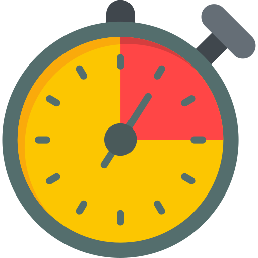

Time is Your gratest asset
wear it well
If you want something a bit different
you could also go with:
"Crafting timeless
moments on your wrist,"
elegance for every moment.
Every second counts
Stay on time
Never miss a moment
